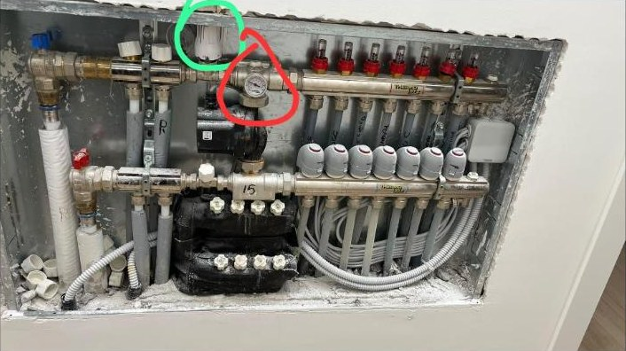
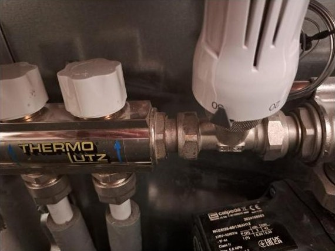
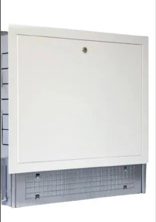
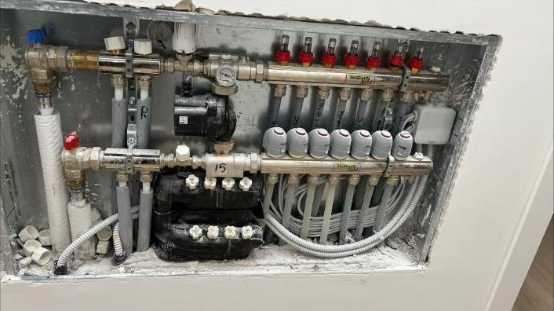
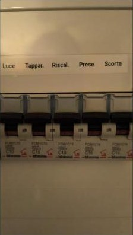
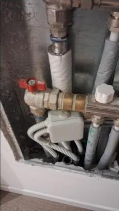
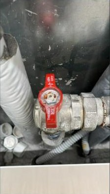
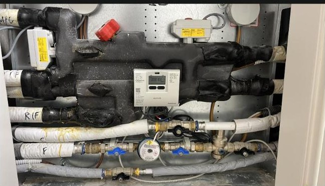
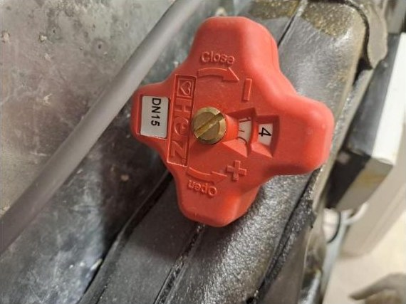

Guida al riscaldamento
Martiri delle Foibe 35-37 · aggiornata al 9 novembre 2026
Per scaldare solo i termoarredi dei bagni senza scaldare le stanze: cronotermostato centrale alto, termostati delle stanze bassi, acqua del radiante al minimo.
Questa guida raccoglie i consigli che i condomini si sono scambiati nella chat del condominio il 9 novembre 2026. Sono esperienze pratiche, non istruzioni ufficiali del costruttore o dell'installatore: gli impianti dei singoli appartamenti possono essere collegati in modo diverso.
Come funziona l'impianto
Termoarredi e pavimento radiante sono due circuiti diversi, entrambi sotto il cronotermostato centrale.
I termoarredi dei bagni stanno sul circuito ad alta temperatura, prima della pompa del radiante: per questo possono scaldare anche quando il pavimento è spento. Il pavimento parte solo se almeno un termostato di stanza chiede caldo.
Solo termoarredi, stanze spente
Con queste impostazioni i termoarredi scaldano e il pavimento radiante resta spento. Due famiglie (una al 35, una al 37) confermano che da loro funziona.
- Imposta il cronotermostato centrale (in corridoio) a 25 °C. È lui che comanda i termoarredi: se è più basso della temperatura di casa, i termoarredi restano freddi anche con la manopola al 5.
- Imposta i termostati delle stanze a 19–20 °C, cioè sotto la temperatura attuale: così non chiedono calore e il radiante non parte.
- Abbassa la temperatura dell'acqua del radiante al minimo dalla manopola bianca sul collettore (vedi la sezione successiva).
- Controlla il collettore: la pompa deve essere spenta e le testine abbassate (vedi Controllare pompa e testine).
Se le stanze si scaldano comunque, passa alla tabella dei problemi.
Temperatura dell'acqua
Tieni l'acqua del radiante bassa: a 40 °C una famiglia aveva la casa "come un forno". Abbassandola si riesce a tenere il riscaldamento acceso in modo costante senza soffocare. Qualcuno sospetta di averla ancora a 60 °C: vale la pena controllare.
Si regola dalla manopola bianca sul collettore, quella con la scala 20–60. Il termometro lì accanto mostra la temperatura reale dell'acqua. Un condomino la tiene poco sotto 40 e ha già fin troppo caldo.


Trucco per la doccia: con l'acqua al minimo, poco prima della doccia alza di qualche decimo di grado il cronotermostato in corridoio. I termoarredi si scaldano in fretta e trovi gli asciugamani caldi. Poi riporta il valore come prima.
Per confronto: a riscaldamento spento quasi tutti hanno tra 22 e 24 °C in casa, chi è esposto a nord o al piano terra tra 19 e 21,5 °C. Chi ha acceso tutto a 25 °C per prova, la mattina dopo aveva "ferragosto in sala".
Da dove arriva l'acqua: dal modulo dei contatori sul pianerottolo l'acqua arriva intorno ai 40 °C. La manopola bianca sul collettore la miscela prima che vada nel pavimento. A un condomino il tecnico l'ha impostata sotto i 30 °C, spiegando che è la temperatura giusta per l'impianto; in altre case è a 40. È uno dei punti da chiarire con l'impresa.
Controllare pompa e testine
Il collettore ti dice in pochi secondi se il radiante sta scaldando o no.
Dove si trova: è un pannellone bianco a muro dentro casa. A seconda dell'appartamento è in sala, in corridoio o in cameretta (a volte nascosto dietro un mobile).


Cosa guardare:
| Elemento | Acceso (sta scaldando) | Spento |
|---|---|---|
| Pompa di circolazione | Luce verde accesa | Luce verde spenta |
| Testine (una per circuito) | Alzate, con un bordo rosso visibile | Schiacciate e piatte |
La pompa parte appena un termostato di stanza chiede caldo e si ferma quando l'ultimo ha raggiunto la temperatura. Quindi, con le impostazioni "solo termoarredi", pompa spenta e testine tutte piatte = tutto giusto.
Le testine servono anche a trovare guasti: una famiglia aveva metà sala col pavimento caldo e metà freddo, e la causa era una testina staccata dalla sua sede.
Il pavimento non parte: 5 controlli
Se con tutto su "fiamma" e a 25 °C il pavimento resta freddo, di solito c'è una valvola chiusa o un interruttore spento. Il 4 novembre è successo a un condomino: le valvole erano chiuse.
- Interruttore "Riscal." acceso sul quadro elettrico di casa. In un appartamento era su OFF, ed era tutto lì.
- Crono e termostati su "fiamma" (modalità riscaldamento) e impostati sopra la temperatura della stanza.
- Valvole a leva aperte: la valvola rossa all'ingresso del collettore e le valvole rosse e blu nel modulo dei contatori. Una valvola a leva è aperta quando la leva è parallela al tubo, chiusa quando è di traverso.
- Valvola rossa a croce aperta sul modulo dei contatori: si apre girando verso "Open" / "+".
- Manopola dell'acqua non al minimo: per far partire il pavimento serve almeno 30–40 °C.
Se una valvola è dura, non forzarla: chiama il referente per la manutenzione.





Problemi comuni
Quasi tutti i problemi segnalati si diagnosticano guardando il collettore.
| Sintomo | Causa probabile | Cosa fare |
|---|---|---|
| Termoarredo freddo anche con la manopola al massimo | Cronotermostato in corridoio più basso della temperatura di casa | Alza il crono (es. 25 °C) |
| Termoarredo si stacca dopo un po' | Il corridoio si scalda, supera la temperatura del crono e il crono si spegne | Acqua del radiante al minimo; alza il crono di qualche decimo solo quando servono gli asciugamani caldi |
| Stanze a 25 °C anche con i termostati a 19–20 °C | Il radiante sta scaldando (o l'acqua è troppo calda) | Controlla la pompa: con le stanze sotto soglia deve essere spenta. Se è accesa, i termostati potrebbero essere collegati male: chiama il tecnico |
| Casa "come un forno" | Acqua del radiante troppo calda (40–60 °C) | Abbassala dalla manopola bianca sul collettore |
| Pavimento caldo solo in parte della stanza | Una testina staccata dalla sua sede | Controlla le testine al collettore e rimettila in sede |
| Termoarredo non funziona più, riscaldamento mai acceso | Da capire (segnalato da un condomino) | Prima verifica il crono; se non basta, chiama il tecnico |
Raffrescamento e split
Il punto debole sono le schede elettroniche degli split: con un blackout possono saltare.
Dopo un'interruzione di corrente: luce verde che lampeggia sempre + split che non risponde ai comandi = scheda saltata.
Come funziona. D'estate rinfrescano gli split (i "diffusori" a parete), alimentati ad acqua dalle pompe di calore dell'impianto: hanno tubi di mandata e rubinetti propri. A metà ottobre l'impresa ha provato le pompe di calore "in caldo" e ha passato l'impianto al riscaldamento. Da quel momento gli split non scaldano: al massimo fanno girare la ventola, e se li accendi soffiano aria fresca.
Il problema delle schede. Il 7 novembre è saltata la corrente e in molte case gli split non sono più ripartiti: in un appartamento 4 su 5. Chi aveva già avuto le schede sostituite non ha avuto problemi. Era già successo in estate e il 29 ottobre.
- Dopo ogni blackout accendi uno per uno tutti gli split e controlla che rispondano.
- Luce verde lampeggiante da sola non basta: uno split mai collegato al Wi-Fi lampeggia ma funziona. Conta se risponde o no ai comandi.
- Se è saltata la scheda, avvisa il referente per la manutenzione; la riparazione la fa Termoproject.
- Quando arriva il tecnico, finita la riparazione prova subito con lui anche gli altri split: staccando la corrente può farne saltare altri.
Quadro elettrico. In molte case c'è un'unica leva "risc./split": non si possono staccare solo gli split senza spegnere anche il riscaldamento. Alcuni condomini vogliono chiedere un interruttore separato (nel quadro c'è posto) o una protezione contro gli sbalzi, e un'estensione della garanzia sugli split.
Altro
- Split scollegati dal Wi-Fi: tenere separate le reti a 2,4 e 5 GHz può non bastare. A due condomini ha risolto togliere l'alimentazione all'unità (reset completo) e riconfigurarla dall'app.
- Perdite d'acqua dal raffrescamento: a inizio ottobre un raccordo in ottone su un tubo di mandata perdeva. Il numero emergenze di Travini ha chiuso i rubinetti del raffrescamento, poi il raccordo è stato sostituito.
- Collaudo: per il raffrescamento l'impresa ha già fatto un giro di verifica in tutte le case; per il riscaldamento non ancora.
Consigli generali (non verificati sul nostro impianto)
Questi consigli valgono per i pavimenti radianti in genere e non vengono dalla chat. Prima di cambiare qualcosa, verificali con l'installatore.
Per usarlo meglio
- Il radiante è lento. Ci mette ore a scaldarsi e a raffreddarsi. Rende meglio con una temperatura quasi costante e un abbassamento notturno di 2–3 °C al massimo. Spegnerlo e riaccenderlo spesso consuma di più.
- Acqua di mandata tra 30 e 35 °C. È il valore tipico per il radiante: in una casa nuova e ben isolata 40 °C sono già tanti, 60 °C troppi.
- Pompa di calore: se l'impianto ne usa una (lo split lo fa pensare, ma va confermato), acqua più bassa vuol dire anche bolletta più bassa.
- Porte dei bagni chiuse quando i termoarredi sono accesi: il calore arriva meno al crono in corridoio, che così non si spegne troppo presto.
- Niente tappeti spessi o mobili senza piedini sul pavimento: isolano e frenano il calore.
Per i problemi
- Termoarredo freddo in alto o a metà: spesso c'è aria dentro. Va sfiatato con la valvolina in alto, a impianto acceso, tenendo un panno sotto per l'acqua.
- Stanza che scalda col termostato basso: le testine nuove a volte escono di fabbrica aperte finché non ricevono corrente per qualche minuto. Anche una testina staccata di solito lascia la valvola aperta.
- Asciugamani caldi senza accendere l'impianto: esistono kit con resistenza elettrica da montare sul termoarredo. Prima di montarne uno, chiedi all'installatore se è compatibile.